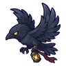
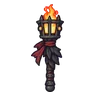

หอสังเกตการณ์ริมด่าน
ดูบนแผนที่และวิธีไป วางแผนฟาร์ม
ชั้นล่างในดินแดนเหนือ · Lv 36–48
เดินต่อไป
มอนในแมพ (7)
| มอน | Lv | ในแมพ | ธาตุ | โซน |
|---|---|---|---|---|
| 36–43 | ลม | |||
| 38–48 | ไม่มีธาตุ | |||
 อีกาส่งสัญญาณ | 36–46 | มืด | ฐานหอสังเกตการณ์ | |
| 38–48 | ดิน | |||
| 38–48 | อมตะ | ฐานหอสังเกตการณ์ | ||
| 38–48 | อมตะ | |||
| 50–50 | 1 | ลม |
อุปกรณ์ที่ดรอปในแมพนี้
| ของ | โอกาสสูงสุด |
|---|---|
| 0.5% | |
| 0.25% | |
| 0.25% | |
| 0.25% | |
| 0.25% | |
| 0.25% | |
| ชุดขนจิ้งจอก | 0.15% |
| เกราะด้วงเขียว | 0.15% |
| เกราะเปลือกไม้ผี | 0.15% |
| ชุดชาวประมง | 0.15% |
| 0.12% | |
 คบเพลิงอีกาส่งสัญญาณ | 0.12% |
| 0.12% | |
| 0.12% | |
| 0.12% |